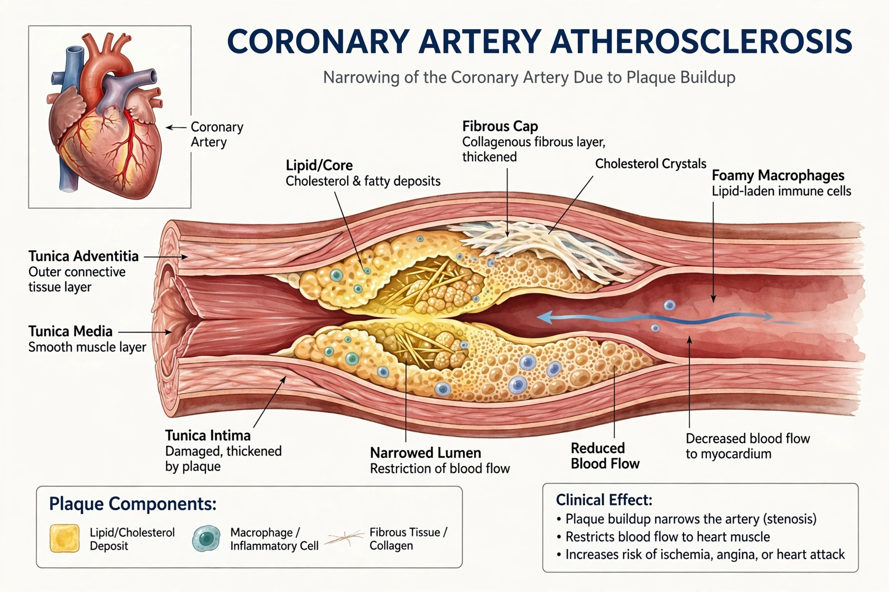

Angina
Angina, also known as angina pectoris, is chest pain or pressure caused by insufficient blood flow to the heart muscle, most often due to coronary artery disease. It is typically triggered by physical exertion or emotional stress and relieved by rest or nitroglycerin. Angina that occurs at rest, is new, or is worsening — unstable angina — is a medical emergency and may precede a heart attack.

| Specialty | Cardiology |
|---|---|
| Symptoms | Chest pressure or pain, radiating to arm, neck or jaw; breathlessness |
| Causes | Coronary artery disease; coronary spasm |
| Risk factors | Smoking, diabetes, hypertension, high cholesterol, age |
| Treatment | Nitrates, beta blockers, statins, revascularisation |
Classification
Stable angina follows a predictable pattern with exertion and settles with rest. Unstable angina is part of the acute coronary syndromes: pain is more severe, prolonged, occurs at rest, or is increasing in frequency, and requires urgent assessment. Prinzmetal (variant) angina results from coronary artery spasm, often at night, and microvascular angina arises from dysfunction of the small coronary vessels despite normal large arteries.
Pathophysiology
Angina reflects a mismatch between myocardial oxygen demand and supply. Atherosclerotic plaque narrows the coronary arteries; when demand rises with exertion, the compromised vessels cannot deliver enough oxygenated blood, causing ischaemic pain mediated by metabolic by-products.
Diagnosis and management
Diagnosis rests on the history, electrocardiography, exercise or pharmacological stress testing, coronary CT angiography, and invasive angiography where indicated. Long-term management combines risk-factor control, antiplatelet agents, statins, and anti-anginal drugs, with percutaneous coronary intervention or bypass surgery for suitable patients.
See also
Arthritis · Myocardial infarction · Coronary artery disease · Nitroglycerin